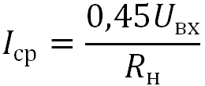
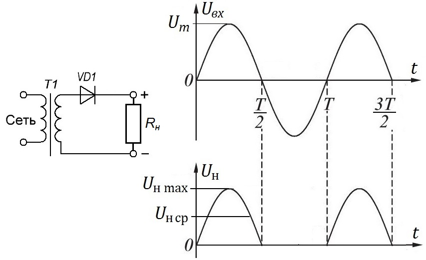
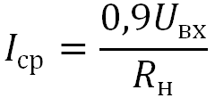
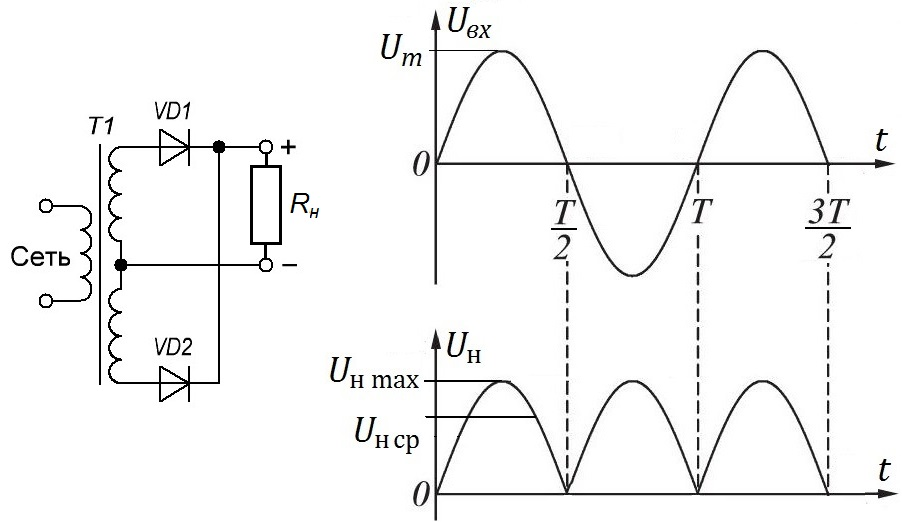
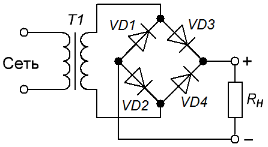

Расчет выпрямителей напряжения
Однополупериодный выпрямитель
Основные параметры однополупериодного выпрямителя:
- Среднее значение выпрямленного напряжения:
Uср=0,45Uвх
- Действующее значение входного напряжения:
Uвх≈2,22Uср
- Среднее значение выпрямленного тока:

- Действующее значение тока во вторичной обмотке трансформатора:
I2≈1,57Iср
- Коэффициент пульсаций:
p=1,57
{kind=link}

Двухполупериодный выпрямитель
Схема выпрямления с выводом от средней точки трансформатора
Основные параметры двухполупериодного выпрямителя с выводом от средней точки трансформатора:
- Среднее значение выпрямленного напряжения:
Uн ср=0,9Uвх
- Действующее значение входного напряжения:
Uвх≈1,11Uн ср
- Среднее значение выпрямленного тока:

- Действующее значение тока во вторичной обмотке трансформатора:
I2≈0,78Iср
- Коэффициент пульсаций:
p=0,67
{kind=link}

Мостовая схема выпрямителя
Параметры мостовой схемы выпрямителя такие же, как и двухполупериодной схемы со средним выводом, кроме обратного напряжения - оно в два раза меньше.
{kind=link}
